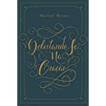

WITHLIST
Last time updated by Vitu was in 15/06/2020

Deus, casamento e família: Reconstruindo o fundamento bíblico - 2a. Edição ampliada
de Andreas J. Köstenberger, David W. Jones (Capa comum)
R$42.72

Significado do casamento, O
de Timothy Keller (Capa comum)
R$35.98

O evangelho segundo os apóstolos: O papel das obras na vida de fé
de John Macarthur, Markus Hediger (Capa comum)
R$25.46

Cristo e cultura: uma releitura
de D. A. Carson (Capa comum)
R$28.29

Hamlet
de William Shakespeare, Lawrence Flores Pereira (Capa comum)
R$30.32

O Senhorio De Cristo
de Vern S. Poythress, Felipe Sabino de Araújo Neto (Capa comum)
R$38.90

O que é uma família?
de Edith Schaeffer, Felipe Sabino de Araújo Neto (eBook Kindle)
R$24.99

Contra a idolatria do Estado: O papel do cristão na política
de Franklin Ferreira (eBook Kindle)
R$37.00

Cartas a Malcolm
de C.S. Lewis, Francisco Nunes (Capa dura)
R$24.43

O problema da pobreza: A questão social e a religião cristã
de Abraham Kuyper, Minka Lopes (Capa comum)
R$24.42
Autoridade bíblica pós-reforma
de Kevin J., Vanhoozer (Capa comum)
R$31.26

Confissões: 1
de Agostinho (Capa comum)
NA

Inteligência humilhada
de Jonas Madureira (Capa comum)
R$40.69

A Bíblia Toda, o Ano Todo
de John R. W. Stott (Capa comum)
R$58.14
- 
Deleitando-se Na Oração
de Michael Reeves, Felipe Sabino (Capa comum)
R$14.99

Razão da nossa fé, A
de William Lane Craig, Joseph E. Gorra (Capa comum)
R$58.83

50 Crucial Questions: An Overview of Central Concerns about Manhood and Womanhood
de John Piper, Wayne Grudem (Capa comum)
R$52.55

Cante! Como o Louvor Transforma Sua Vida, Sua Família e Sua Igreja
de Keith Getty, Kristyn Getty (Capa comum)
R$23.41

Grandes obras de Shakespeare - Box
de William Shakespeare (Capa dura)
R$151.13